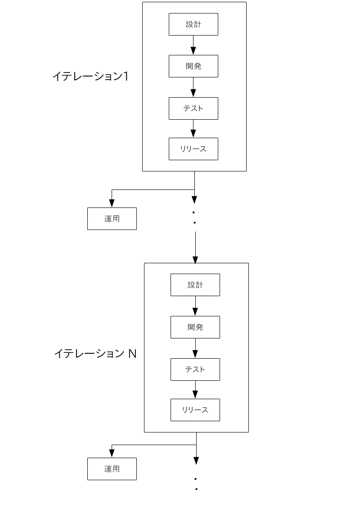

アジャイル(agile)は「素早い」とか「迅速」という意味で、アジャイル型のソフトウェア開発(以下アジャイル開発)はその名の通りソフトウェアを迅速に開発して迅速にリリースするための開発手法です。
インターネットが普及するにつれてウォーターフォール開発が時代にそぐわなくなってきたので、それに代わるアジャイル開発が台頭してきました。
アジャイル開発は反復型開発手法の一種であり、開発工程を「イテレーション」という短い(だいたい1〜4週間の)期間に区切り、各イテレーション毎に開発を繰り返します。
また開発するだけでなく、各イテレーションの終了時にソフトウェアのリリースも行います。
アジャイル開発の特徴は以下の通りです。
ところで単純だったウォーターフォール開発と異なり、アジャイル開発による開発プロセスは(今のところ)きちんと体系化されているわけではありません。
そのため自称も含み、メジャーな物からマイナーな物まで世界中で様々なアジャイル開発手法が考案されています。
ただし大抵のアジャイル開発手法は以下の基本的な開発プロセスに従って出来ています。
